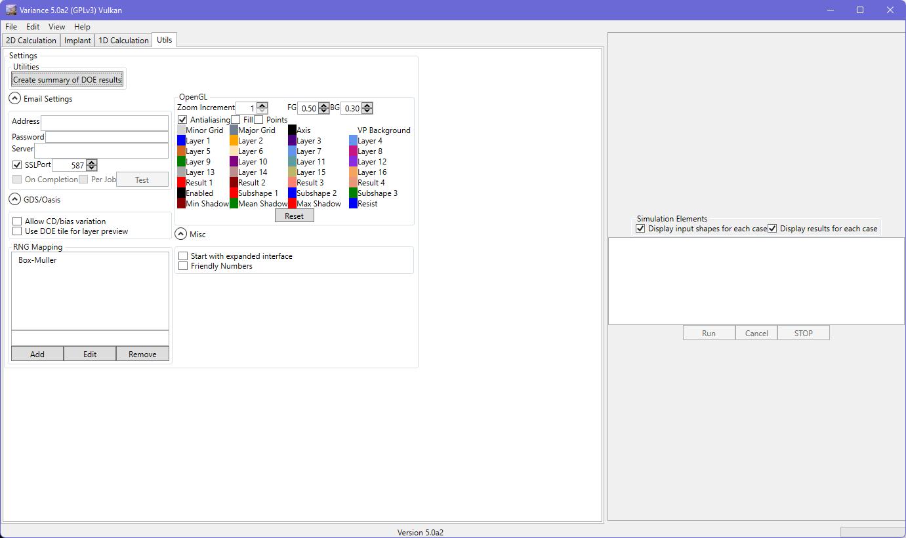
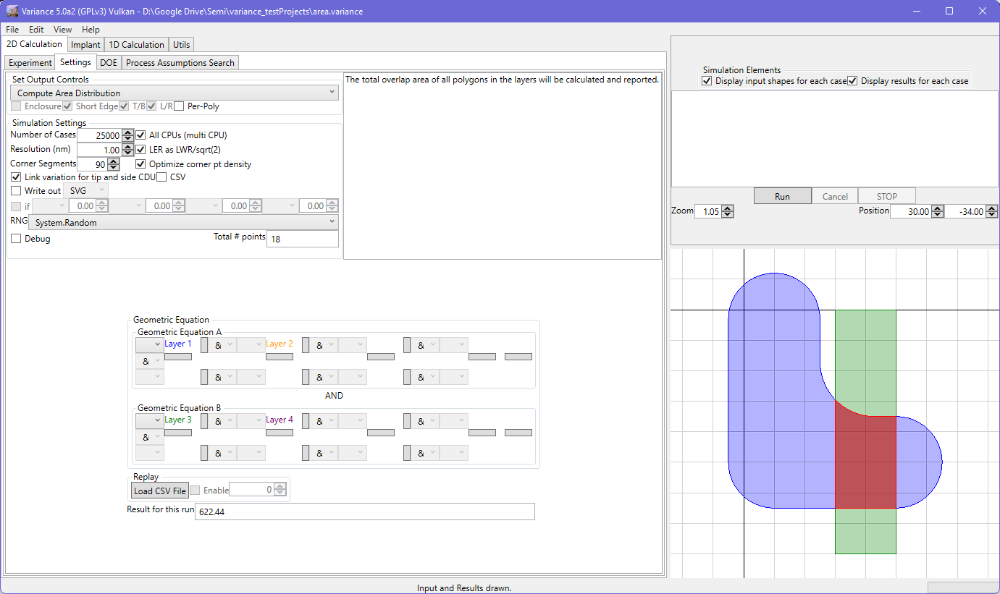

The Utilities tab is where miscellaneous tools and settings can be found that do not find a ready home elsewhere in the application.

This tool can be used to generate a CSV file that summarizes all of the results from a DOE. The results are presented in a grid. Each result is of the form 'result 0: x: 17.01(s: 2.67)'. Multiple results from the same cell in the DOE are separated by ';' and have their result number indicated (e.g. 'result 0: x: 17.01(s: 2.67);result 1: x: 16.75(s: 2.66)'.
Equation: (Layer 1) MIN SPACE/OVERLAP/ENCL TO/WITH (Layer 3)
,
,
,
result 0: x: 17.01(s: 2.67),result 0: x: 17.01(s: 2.67)
The tool will process any and all DOEs in the directory that you specify, creating one summary file per DOE that is found.
This tool offers notification options for job/batch completion. The settings should be straightforward and available from your provider. You can determine whether they are correctly set using the 'Test' button to send a mail. The 'from' and 'to' addresses will be the same.
The email received when jobs are completed will be of the form:
(Subject) Variance run completed : ..\..\..\VxC14.xml
(Body) x: 706.69, s: 108.8
In the case of run failure, the subject line will have 'aborted' in place of 'completed'. The subject line lends itself to filtering. In case of mistakes, the email is deliberately terse to avoid problems if the address is incorrect. Nothing can be inferred from the content and no attachments are sent. The subject line does contain the full path and job XML reference, to provide context for the user to know which jobs are complete.
These settings are remembered across sessions, and are stored in the user's registry. On non-Windows platforms, the registry replacement system (e.g. from Mono or Wine) may be readable by other users, so caution is advised.
This tool offers preferences to configure the viewport appearance and look-and-feel.
These settings are remembered across sessions, and are stored in the user's registry.

The color squares show the current colors assigned to different elements in the viewport. Click on a square to bring up a color picker in order to change the colors as-desired. The changes will be applied across the interface without further action, although the individual layer viewports may only update once 'nudged' (e.g. zooming)
This tool offers preferences to configure aspects related to GDS/Oasis files.
These settings are remembered across sessions, and are stored in the user's registry.